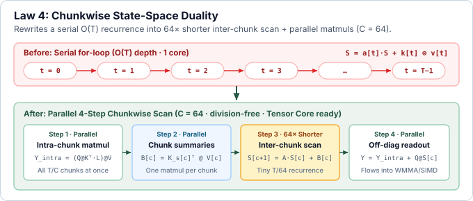
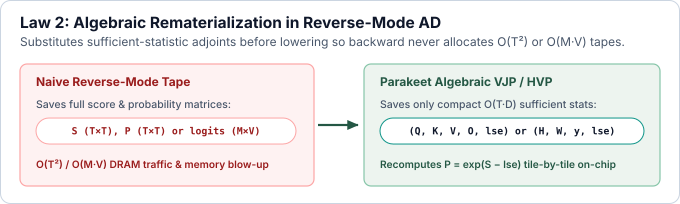

Algebraic optimization¶
Parakeet does not optimize programs by matching hardcoded neural-network layer names ("FuseAttention", "FuseLinearCrossEntropy"). Instead, every optimization lives at the level of coordinate-driven array operators and follows one three-stage progression:
- Eliminate temporaries (Fusion): merge producer-consumer chains, boolean filters, and sibling traversals into single-pass loops.
- Stay in fast memory (Tiling): block map-of-reduction nests into L1/L2 cache, registers, and GPU shared memory.
- Break three algebraic walls (Laws 1–6): overcome row-wide normalizations, chained contractions/recurrences, and masked or differentiated intermediates that defeat classical fusion alone.
Because these rewrites match mathematical structure rather than library APIs, the exact same passes accelerate Gaussian kernel regression, exact 1-NN, GBDT histograms, and IIR filters alongside causal attention, linear cross-entropy, and state-space models.
Semantic contract: real algebra vs. exact order¶
- Associative rewrites (parallel reductions, monoidal tiling, contraction reassociation, chunkwise scans, privatized scatter-add) assume real-arithmetic associativity: floating-point rounding may differ in the last ULP relative to a left-to-right loop, just like NumPy's pairwise summation or cuBLAS.
- Order-sensitive operations (first-index ties and NaNs in
argmin/argmax, non-commutativepar.foldmerges, arbitrary user folds) preserve exact left-to-right merge order.
Stage 1: Classical fusion (eliminating temporaries)¶
Before lowering operators to loops, Parakeet collapses three kinds of wasted memory traffic:

Stage 2: Classical tiling (staying in cache and SRAM)¶
Fusion alone does not fix nested contractions like C = A @ B or min-plus
matrix products: computing C[i, j] reads an entire row of A and column of
B, sweeping DRAM over and over.
When an IndexMap wraps an IndexReduce, Parakeet blocks the iteration space
into an IndexTile with explicit TileStage buffers:
- CPU: L1/L2 cache blocking +
2×4register jamming + target-aware reduction interchange (np.sum(X, axis=0)hoists strided inner reductions outside contiguous strips). - Apple Metal:
threadgroupshared-memory staging + automatic IEEE FP32simdgroup_matrixhardware tiles. - NVIDIA CUDA:
__shared__double-bufferedcp.asyncstaging + opt-in TF32mma.syncTensor Cores (config.tensor_cores = True).
Stage 3: Breaking three walls (the six algebraic laws)¶
Classical fusion and tiling hit three hard walls on modern workloads:
Softmax (max + sum(exp)), argmin, and shared-bin histograms depend on a
whole row before producing outputs. Laws 1 & 6 lift the accumulator into
an associative carry state (rescaled (m, l, o) monoids or ordered
(best, idx) carries) so tiles stream in O(1) scratch memory.
Matrix chains (U @ Vᵀ) @ Wᵀ blow up FLOPs in the wrong order, and for t:
recurrences have O(T) serial depth. Laws 3 & 4 reassociate bilinear
contractions and fold recurrences into parallel C = 64 chunkwise GEMMs.
Reverse-mode AD naively saves O(T²) attention scores, and causal/window masks
waste half (or 99%) of the tiles. Laws 2 & 5 save only compact O(T·D)
sufficient statistics for on-chip recomputation and prune dead tiles statically
via coordinate intervals.
Below is each law paired with the exact code transformation it performs.
Wall 1: Associative carry monoids (Laws 1 & 6)¶
Law 1: Rescaled semiring monoids¶
Softmax attention, linear cross-entropy, and Gaussian/RBF kernel regression all
normalize by a row-wide max and sum(exp(...)) before taking a weighted
sum—naively allocating O(N · M) or O(M · V) intermediates.
Tracking the running maximum m, normalizing denominator l, and unnormalized
output o forms an associative monoid (S, ⊕, e):
(m₁, l₁, o₁) ⊕ (m₂, l₂, o₂) = (
m,
l₁ · exp(m₁ − m) + l₂ · exp(m₂ − m),
o₁ · exp(m₁ − m) + o₂ · exp(m₂ − m)
)
Because ⊕ is associative, tiles reduce in cache or GPU shared memory and
merge in any grouping with zero score-matrix allocation:

Triggered automatically by monoidal tiling on:
- Softmax attention (
flash_monoid): streamsK, Vtiles againstQwith zeroS/Pallocation (and splitsT_kvacross threadblocks for short-querysplit_kdecode). - Linear cross-entropy (
monoid_lse): tilesH @ Wover vocabularyVusing the scalar(m, l)monoid, eliminating theM × Vlogit tensor. - Gaussian / RBF kernel regression (
score_op="sqdist"): fuses-γ · ‖xᵢ − yⱼ‖²into the exact same streaming kernel.
Law 6: Privatized scatter & ordered multi-state carries¶
Two core patterns sit outside standard dense linear algebra:
- Ordered pairwise tile folds (
pairwise fold tiling):Fold.carriestracks multiple scalar fields(min_dist, idx)or(weight_sum, value_sum)across L1/SRAM score tiles merged strictly left-to-right—eliminatingO(Q · R)distance matrices in exact 1-NN and inverse-distance smoothing while preserving NumPy's exact first-index rule on ties and NaNs. - Keyed histogram fusion (
IndexScatter): siblingpar.scatter_add,np.add.at, inverted[np.sum(v[idx == b]) for b in range(n)], orfor i: h[idx[i]] += v[i]loops sharing an index array merge into one thread-privatized CPU pass or atomic GPU pass (e.g. GBDT grad/Hessian histograms and 6-channel BAM pileups).

Wall 2: Reassociation & chunkwise duality (Laws 3 & 4)¶
Law 3: Bilinear contraction reassociation & shared-KV tiling¶
Chaining two bilinear contractions ((U @ Vᵀ) @ Wᵀ, such as latent attention
K = C_kv @ W_uk, V = C_kv @ W_uv) can cost orders of magnitude more FLOPs
and memory in the wrong parenthesization:
contraction reassociation emits a runtime shape-guarded branch so short-query
decode runs tiled Law 1 attention directly over compressed C_kv, while
long-query prefill takes the lower-FLOP expanded branch. For grouped-query
attention (GQA), the head-group axis G folds into the query tile so all G
query heads share one SRAM load of K and V.
Law 4: Chunkwise state-space duality¶
Plain Python recurrences (for t in range(T): s = a[t] * s + b[t]) have O(T)
serial depth. Because affine maps compose associatively,
(a₂, b₂) ∘ (a₁, b₁) = (a₂ · a₁, a₂ · b₁ + b₂), chunkwise scan partitions
time into chunks of C = 64 and turns both scalar affine loops (EMA, IIR,
Kalman) and bilinear matrix-state loops (Mamba-2) into division-free parallel
scans and GEMMs:

Because chunkwise scan runs before Stage 2 tiling, the chunk GEMMs flow
directly into CPU register tiles, Metal simdgroup_matrix, and CUDA TF32
Tensor Cores.
Wall 3: Structure-preserving shortcuts (Laws 2 & 5)¶
Law 2: Algebraic rematerialization in reverse-mode AD¶
A naive reverse-mode tape saves every forward intermediate, bringing back
O(T²) memory for attention and O(M · V) memory for cross-entropy. Before
loop lowering, algebraic_vjp substitutes sufficient-statistic adjoints that
save only O(T · D) tensors and recompute score tiles on-chip during
backpropagation:

- Attention backward (
flash_monoid_bwd): saves(Q, K, V, O, lse), recomputesP = exp(S − lse)anddS = P · (dO @ Vᵀ − D)tile-by-tile, and composes with forward-over-reversepar.hvp. - Cross-entropy backward (
cce_bwd): saves(H, W, targets, lse)and recomputesp[i, v] = exp(hᵢ · wᵥ − lseᵢ)on-chip. - LayerNorm / RMSNorm & softmax VJPs: collapse multi-pass backward graphs
into one pass (
dS = P · (dP − ∑ P · dP), dropping themaxadjoint).
Law 5: Affine tile-interval mask pruning¶
Causal masks (j <= i), sliding windows (i - j <= W), and banded matrices
evaluate millions of entries that are immediately discarded. TileInterval
propagates each tile's coordinate box [i₀, i₀ + Bₘ − 1] × [j₀, j₀ + Bₙ − 1]
through affine index predicates to classify every tile before loading data:
Sliding-window masks ((j <= i) & (i - j <= W)) drop automatically from
O(N²) to O(N · W) work. For runtime boolean mask arrays, GPU threadblocks
cooperatively check whether any entry in the tile is true and skip empty tiles
before loading values.
Next: Rewrite rules & thesis lineage gives the exact pass-by-pass reference and shows how Parakeet 1.x evolved from the 2013–2014 NYU theses. See the Kernel gallery for runnable examples of every law.